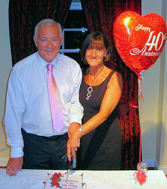
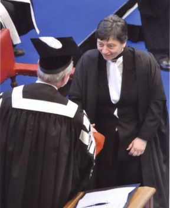
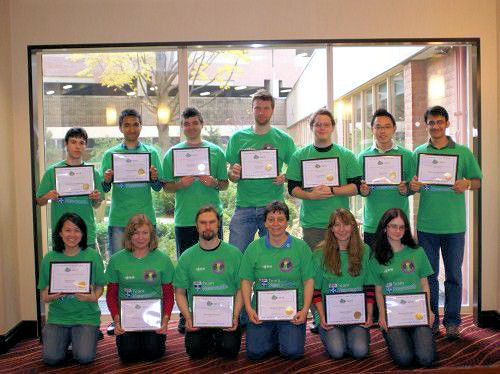
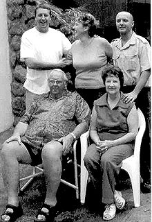
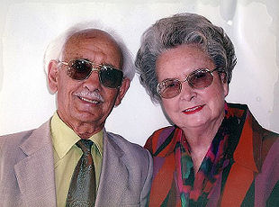
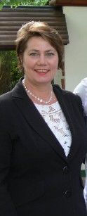
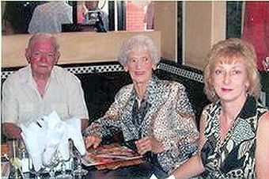

|
Indeks: |

Leonard Andrews van Falkirk, Stirlingshire, Skotland het 'n rukkie terug so 'n bietjie op die internet rondgespeel en werklikwaar daar sien hy iets van sy oupa en ouma - en dit op die webwerf van die Henning Familiebond. Sy ouma, b1.c6.d8.e3. Charlotte Gertruida Henning *18-7-1888 was 'n jong plaasmeisie van Zastron en sy oupa, David Allen het gedurende die Anglo-Boere-oorlog as 'n Britse soldaat van Skotland gekom. Nadat die Britse magte die Vrystaat hoofstad gedurende 1901 onderwerp het, is David Allen as 'n polisieman in die Rouxville/Zastrondistrikte geplaas. Hier ontmoet hy hierdie jong Henning meisie en hulle trou in 1907. Hy dien tot ongeveer 1911 in die Suid Vrystaat, maar na die Eerste Wêreldoorlog trek hy, sy vrou en kinders wat op daardie stadium reeds gebore was, terug Skotland toe en vestig hulle by Stenhousemuir, naby Falkirk.
Leonard Andrews was so opgewonde om sy voorsate op die internet te sien, dat hy dadelik met Bondsekretaris, Olivier Henning begin korrespondeer het en het 'n groot klomp aanvullende gegewens vir ons verstrek, asook 'n foto van sy oupa en ouma.
Hy was so beindruk met sy Henning voorsate en die Henning webwerf dat hy twee Henning lapelwapens en twee stelle Henning mansjetknope bestel het. Hy het toe sommer ook vir ons 'n mooi donasie van R500.00 saamgestuur.
Ons publiseer graag Leonard Andrews se brief aan die Bondsekretaris.
Just a note to say I've received the cufflinks and badges and I am delighted with them. I will wear them with pride. I have sent a photo of me and Moira on our 40th anniversary, so you can put a face to my name. I hope the funds transferred ok and I am so glad you will put my small donation to good use.
All the best from chilly Scotland and I hope you and your family are well.

Die kinders wat aan die einde van 2010 matriek voltooi het, se ouers was in die meeste gevalle nog net klein kindertjies toe ons die Henning Geslagsregister opgestel en al drie uitgawes van die Geslagsregister/Familiekroniek uitgegee het. Dit bring mee dat ons baie van hierdie kinders nie op rekord het en dus nie kan identifiseer nie.
Mens sou graag nou weer 'n vraelys aan alle Hennings in Suid-Afrika wou uitstuur, met die hoop dat ons baie van die onopgetekendes kon opspoor. Ongelukkig is daar nie meer enige betroubare adreslyste van enige aard beskikbaar nie. Ons het wel die 2007 kieserslyste van sewe van die nege provinsies in die hande gekry (slegs Natal en die Noord-Kaap nie), maar hierdie lyste is so swak dat mens dit geensins kan gebruik nie. Dit is duidelik dat minstens die helfte van alle blanke kiesers nie geregistreer was nie - daar is beslis die helfte minder Hennings op hierdie lyste as op die 1989 kieserslyste. Meer as die helfte van die mense wie se name wel op die lyste verskyn, se adresse is nie opgeneem nie. Slegs 'n naam en identiteitsnommer verskyn. Dit sou dus 'n vrugtelose oefening wees om hierdie lyste te gebruik.
Om terug te keer na die matriekuitslae. Ons kon net die uitslae van sewe provinsies bekom - Gauteng, Limpopo, Noord-Wes, Mpumalanga, Vrystaat, Noord-Kaap en Wes-Kaap. Skynbaar was daar geen Henning matrikulante in die Oos-Kaap nie - tradisioneel die bakermat van die Henning familie - en ons kon nie Natal se uitslae bekom nie.
In die verlede was daar meer Henning matrikulante in Transvaal as in die res van die land saam, met die Vrystaat wat altyd tweede meeste matrikulante gehad het. Dit is onrusbarend om te sien hoe die getal Henning matrikulante afgeneem het. Waar ons in 1989 'n hoogtepunt van 40 Henning matrikulante in die ou Transvaal gehad het, was daar in 2010 slegs 12 Henninkies in Gauteng, 7 in Mpumalanga en twee elk in Noord-Wes en Limpopo - totaal 23. Daar was 7 in die Wes-Kaap (redelik konstant), vier in die Vrystaat (heelwat minder as in die verlede) en drie in die Noord-Kaap.
In Gauteng het Ignatius Wilhelm Henning die beste gevaar, met sewe onderskeidings. Hy het natuurlik universiteits vrystelling. Hy is vermoedelik 'n seun van b5.c2.d13.e1.f3.g1.h2. Ignatius Wilhelm Henning en sy vrou Catharina Magdalena (gebore Mans) In die Wes-Kaap het 'n Adriaan Johannes Henning van die DF Malan Hoërskool in die Kaap universiteits vrystelling en in vyf vakke onderskeidings verwerf. Ongelukkig kan ons hom ook nie positief identifiseer nie.
In die Vrystaat het b6.c1.d3.e5.f3.g9.h1.i2. Mariska Henning universiteitsvrystelling en drie onderskeidings verwerf.

Jannetta Steyn (49) is die dogter van b7.c8.d8.e3.f1. Leonetta (Leonie) Steyn, gebore Henning. Jannetta en haar twee kinders woon in Durham, Engeland. Hoewel sy jare terug 'n BA (Honns) graad in tale aan die PU vir CHO verwerf het, is sy 'n kundige op die gebied van rekenaarwetenskap. Sy het gedurende 1997 op eie koste die webwerf vir die Henning Familiebond op Internet geskep en onderhou dit sedertdien.
Almal wat ons webwerf al besoek het, sal kan getuig van die hoë gehalte daarvan. Sy en Bondsekretaris Olivier Henning werk baie nou saam om te verseker dat die webwerf op datum bly. Jannetta is dus ook reeds 'n kundige op die gebied van die Henning familie se genealogie.
Jannetta het reeds 'n M Sc graad in rekenaarwetenskap behaal, maar in 2009 word daar weer 'n beurs aan haar toegeken om voltyds vir 'n M Sc graad in Bio-informatika te studeer aan die Universiteit van Newcastle. Sy sou dus hierdie studies moes doen saam met haar normale pligte as 'n ma met twee kinders, wat voltyds werk. Haar verhaal is so fassinerend dat ons haar self laat vertel:
"My klasse het aan die einde van September 2009 begin en die plan was om aan te hou werk vir een dag 'n week. Ek het bygehou tot in Februarie 2010, maar toe raak die kursus so intensief dat ek nie kon bekostig om een dag 'n week te werk nie want ek sou te veel klasse moes mis. Miskien sal die kursusname julle help verstaan hoekom ek nie klasse wou mis nie en ek gaan nie eers probeer vertaal nie:
1. Bioinformatics Programming in Java
2. Bioinformatics Theory and Practice
3. Comparative and Evolutionary Genomics
4. Computational Analysis of Complex Biological Systems
5. e-Science for Bioinformatics
6. Fundamentals of Cell and Molecular Biology
7. Gene Expression, Proteomics and Microarray Informatics
8. Numeric Skills (Statistics and Mathematics)
9. Research Skills for Bioinformatics
Aan die einde van 2009 het die kursusleier ons vertel van 'n kompetisie waaraan die universiteit elke jaar deelneem. Dit was egter 'n vereiste dat mens deur die jaar goed moet doen want hulle kan nie bekostig dat studente se punte lei onder die druk van die kompetisie nie. Die span bestaan uit voorgraadse-, Meesters- en eerste jaar Doktorsgraadstudente. Nadat hulle toe hulle voorgraadse span en een Doktorsgraadstudent gekies het, vra hulle toe een aand einde van Januarie 2010 of enige van die Bioinformatikastudente wil deelneem. Hulle wou twee van ons hê. Ek dink daar was net drie of vier van ons wat belangstelling getoon het. Ek was baie gretig om deel te neem, maar aanvanklik het ek nie gedink ek sou dit saam met die werk kon behartig nie. Aangesien ek aan die einde van Januarie my werk bedank het, het ek toe kans gesien en ek was baie bly toe hulle sê ek is een van die twee wat gekies is om deel van die span uit te maak.
Nou moet ek seker eers vertel wat die graad behels het en wat die kompetisie behels het, want almal vra vir my wat de joos het ek met Biologie en Genetika te doen as ek nog al die jare met rekenaars en sagteware besig was.

Bioinformatika is die toepassing van statistiek en rekenaartegnologie in die veld van molukulere biologie. Tot sowat 10 jaar gelede het dinge baie stadig gevorder in die veld van molukulêre biologie want tegnologie was net nie gevorderd genoeg om enigsins vinniger sin te maak van biologie op 'n molukulere vlak nie. Van toe af het dinge egter vinniger en vinniger begin gebeur en nou gebeur dit so vinnig dat ons van rekenaars gebruik moet maak om sin te kan maak van die inligting wat ons inwin. Om die eerlike waarheid te sê, alhoewel dit nog baie kos en dit nog relatief lank neem om 'n organisme se genoom te bepaal, vloei die inligting nou baie vinniger in as wat ons in staat is, met rekenaars en al, om daarvan sin te maak. As julle meer wil weet van Bioinformatika, gaan kyk gerus na http://en.wikipedia.org/wiki/Bioinformatics, of epos my en vra (jannetta@henning.org) . Dus, waar ek voorheen programme geskryf het vir besigheid, skryf ek nou programme vir bioloë en neuroloë en sulke goed.
Die IGEM-kompetisie het te doen met sintetiese biologie. IGEM staan vir International Genetically Engineered Machines. Ek dink nie sintetiese biologie word noodwendig as deel van bioinformatika beskou nie, maar mens kan nie veel doen sonder rekenaars nie. Sintetiese biologie is 'n kombinasie van ingenieurswese en biologie. Dit klink snaaks nê, maar eintlik maak dit baie sin.
Ek sal julle maar weereens na wikipedia verwys vir 'n ordentlike definisie:
http://en.wikipedia.org/wiki/Synthetic_biology. In kort, wat ons vir die kompetisie gedoen het was om bekende gene te neem en die gene te laat sintetiseer (dws bou 'n stukkie DNA met 'n spesiale masjien), of die geen te dupliseer met 'n proses wat bekend staan as Polymerase chain reaction (PCR). Daarna plant ons die oor in 'n organisme van ons keuse (ons het 'n bakterie met die naam Bacillus subtilis gebruik) sodat die organisme doen wat ons wil hê hy moet doen. In ons geval wou ons Bacillus subtilis so verander dat hulle gom en kalsiumkarboniet moet produseer en ook in lang filamente groei. Ons het ons organismetjie BacillaFilla genoem. Die idee is dan om die bakterië op beton te spuit en dan vul die bakterië die mikrokrake in die beton. Beton in geboue en paaie, ens ontwikkel mikrokrake agv stress. Water syfer dan deur die krake en veroorsaak dat die staal, wat in die beton geplaas word vir versterking, roes. Dus verswak die hele betonstruktuur. Maar, as ons bakterië die krake opvul dan sal dit natuurlik nie gebeur nie.
Nouja, ons kon natuurlik nie die hele idee van begin tot einde ontwikkel nie, maar ons kon genoeg doen om te bewys dat dit in beginsel moontlik is. As julle meer wil weet van ons projek, gaan kyk gerus na: http://2010.igem.org/Team:Newcastle. Of, soos ek gesê het, skryf vir my en vra.

Deel van die kompetisie was dat ons na MIT (Massachusets Institute of Technology) toe gaan in Boston, VSA vir die Jamboree waar die beoordeling en prysuitdeling plaasvind. Die kompetisie werk soos 'n kunswedstryd. Mens moet sekere kriteria bereik om 'n brons, silwer of goue medalje te kry. Dan is daar ook pryswenners in verskillende kategorieë en 'n "overall" wenner. Ons het darem ons goue medalje gekry!! Hierdie jaar was die eerste jaar wat daar 'n span uit Suid-Afrika deelgeneem het. Dit was WITS. Hulle het 'n brons medalje gekry.
Terwyl ons in Boston was het ek ook my MSc uitslae gekry en ek het geslaag met onderskeiding. Wat meer kan mens vra!
Ons gradeplegtigheid was op 8 Desember 2010. Die vise-kansellier van die universiteit is 'n Suid-Afrikaner, Prof Chris Brink (vorige Rektor van die Universiteit van Stellenbosch). En raai wat? Toe hy my hand skud wens hy my geluk in Afrikaans. Ek loop en smaail nog steeds!
Gedurende Januarie 2011 het ek die nuus gekry dat ek 'n beurs gekry het om oor die volgende drie jaar voltyds vir 'n Doktorsgraad te studeer. Ek is so opgewonde soos 'n graad eentjie wat vir die eerste keer skool toe gaan.
Die tema van my doktorsgraad, en maak seker liewe leser dat jy mooi stewig op jou stoel of op die troon sit, is 'n bioinformatika- en neurowetenskaptema: "Die analise van grootskaalse data en rekenaarmodellering van die stomatogastriese ganglion van die krap." Dis nou krap soos in daai tienpotige dinge wat op die strand rondhardloop. Aan die begin van 2011 sal ek hopelik 'n bietjie tyd in Duitsland gaan spandeer by die Universiteit van Ulm. Dis nou as ek iemand kan kry om te kom "baby sit" vir my kinders. Ek moet gaan leer hoe om krappe te dissekteer en die stomatogastriese ganglion te verwyder. Ek moet ook leer om vreeslike klein elektrodetjies dan in die neurone te steek sodat mens hulle kan stimuleer. Daar is ook 'n spesiale ink wat mens in die neurone kan spuit Die ink gloei as daar aktiwiteit in die neurone is. So kan 'n mens dan die aktiwiteit in die neurone meet deur fotos te neem wanneer die ink gloei (of so iets).
'n Vriendin het my daarop gewys dat ek myself dus 'n "computational neuro scientist" sal kan noem. Klink dit nou nie woes indrukwekkend nie? Ek dink net daardie titel alleen is 3 jaar se hardewerk werd!"
'n Mens kan maar net met verwondering luister na die sprokiesverhale van so baie van ons Henning's wat na die buiteland uitgewyk en op die heel hoogste vlak in die beskaafde wêreld presteer het. Ons kan net so trots op Jannetta wees as wat ons is op b1.c6.d3.e11.f3.g1.h1. Dr Reyco Henning wat aan Amerikaanse universiteite op die heel hoogste vlak presteer het (Nuus95/Aug 2008 en 101/Feb2010).


Ons het berig ontvang van die afsterwe van b7.c2.d3.e5.f2.g1. James Matthew Henning *27-11-1939 op 29 Desember 2010 na 'n kort maar ernstige siekte. Dokters vermoed malaria maar niks was bevestig nie. Hy het net terug gekom vanaf die Zambezi waar hy 'n groep van 22 Tiervis vissermanne gelei het, toe hy siek geword het. Niks kon sy agteruitgang stuit nie en hy het net swakker en swakker geword - en toe het allerhande kwale hom geteister. Doodsertifikaart lees "Natural causes." In baie opsigte was hy "formidabel" en die Ouetehuis waarvan hy vir 18 jaar lank die bestuurder was, het hom vereer met Nat King Cole se lied "Unforgettable." Mens sou hom kon beskryf as 'n baie besige persoon. Hy was 'n familieman en trots op sy familie.
Ons het ook berig ontvang dat Hendrik Pieter Burger *10-11-1917, eggenoot van b1.c6.d3.e11.f6. Martjé Elizabeth Burger (gebore Henning) op 12 September 2010 in die ouderdom van 92 jaar te Vredenburg oorlede is. Maar laat tant Martjé self vir ons vertel van haar man:

"Oom Hendrik en ek het ons na sy aftrede op Vredenburg kom vestig. Ons het baie vriende hier gemaak en sy familie woon hier. Hy is op die plaas Spioenkop gebore en het hier groot geword. Sy stokperdjie was hengel en hy het 'n hele paar trofeë gewen as sportman van die jaar.Hy het ook graag tuingemaak en sy blomme en groente was dikwels die onderwerp van bespreking tussen ons vriende.
Hoe langer ons getroud was, hoe hegter het ons aan mekaar geraak en ons het mekaar met groot respek en deernis versorg. Hy het tot drie jaar gelede elke oggend vroeg ongeveer elf kilometers gestap. As gevolg van hartprobleme het hy 'n hartomleidingsoperasie ondergaan. (Tant Martjé self het angina begin kry, maar dit word met medikasie onder beheer gehou).
Met ons 60ste troudag herdenking het die NG gemeente, Akkerdyk ons met 'n onthaal by ons eie huis verras. Oom Hendrik was met sy dood die oudste lidmaat van die gemeente.


TV kykers sal deeglik bewus wees van Coenie De Villiers se baie gewilde program, Kwela, op Kyknet. Tydens die episode wat op 12 Januarie 2011 uitgesaai is, het Coenie 'n onderhoud met die sanger Jay Du Plessis gevoer. Jay is 'n lid van die baie bekende en gewilde sanggroep, Eden, maar het nou 'n solo-album uitgereik. Hy is besig om vinnig opgang te maak in die ligte Afrikaanse musiekbedryf.
Tydens die onderhoud het Jay vertel dat hy van Lady Grey in die Oos-Kaap kom. Hy was 'n gewone plaasseun wat lief vir sport en ander "seunsdinge" was. Die musiekonderwyseres by die skool was Ronél Henning. Sy het die hoof en ander onderwysers oortuig dat plaasseuns ook 'n liefde vir musiek kon ontwikkel, sonder dat hulle as "sissies" beskou word. Die wyse waarop Jay hulde aan hierdie skool musiekonderwyseres gebring het, is beslis 'n groot kompliment vir Ronel.
Die Ronél Henning ter sprake is b7.c8.d8.e1.f2.g1. Aletta Petronella Henning *16-12-1959. Na Lady Grey, was Ronél baie jare verbonde aan die Drakensbergse Seunskoor, maar bedryf deesdae 'n musiek akademie op Lady Brand, waar sy musiek aanbied vir die kinders van al die diplomatieke personeel van al die lande wat diplomatieke sendings in Lesotho het. Die oorgrootte meerderheid van hierdie mense woon in Lady Brand en nie Maseru nie.


Andries Kruger van Barberton het vir ons laat weet dat sy ma se jongste suster, b6.c1.d3.e5.f2.g7. Johanna Marthina Jordaan (gebore Henning) *26-3-1926 hierdie jaar haar 85 ste verjaardag gevier het.
Van die kant van die familiebond wil ons ook graag vir tannie Johanna gelukwens met hierdie besondere mylpaal. Sy is natuurlik nou 'n erelid van die familiebond.

Baie dankie aan almal wat oor die afgelope drie maande vir ons donasies gestuur het. Baie dankie ook aan ons drie lede wat so getrou elke maand d.m.v. debietorders bydraes lewer. Daardeur verseker u dat die familiebond lewenskragtig en vooruitstrewend bly. Soos gewoonlik meld ons die name van diegene wat bydraes van R300.00 en meer aangestuur het:
Willem Nicolaas Francois (Willie) Henning van Karenpark, Pretoria, wat 'n lewenslange lid is, het 'n bydrae van R300.00 aangestuur;
Herbert en Margita Henning van Munchen, Duitsland het R1000.00 bygedra. Herbert is 'n nasaat van die Karnin Hennings in Duitsland. Hulle is Spesiale lede van die familiebond weens hulle betrokkenheid by die Henning families van Suid-Afrika.
Leonard Andrews van Stirlingshire, Skotland, waarvan ons elders in die Nuusbrief geskryf het, R500.00
Pieter Hendrik (Piet) Henning van die Strand - R500,00
Jay Henning van Modimole - R300,00
Gert Frans Dempsey (Gert) Henning van Petrusburg - R300.00
Hermanus Francois (Herman) Henning, 'n lewenslange lid van Rietfontein, Pretoria - R500,00
Met die oudit van ons boeke en die opstel van die finansiële state vir die jaar 2010 het dit geblyk dat die familiebond se inkomste vir die jaar R1 871,00 meer was as ons uitgawes. Dit kan toegeskryf word aan die R3 603,00 rente wat ons op ons beleggings verdien het. Ons lede wat graag na die finansiële state wil kyk, kan gerus vir ons Bondsekretaris laat weet (telefonies/skriftelik/vonkpos/faks) en hy sal vir u 'n afskrif stuur.